ChrisEric1 CECL
How to upgrade 32-bit to 64-bit Windows (or do it reversed)
NOTE:
[#] Means there a note about something, scroll to the bottom of the page to see the note.
WARNING:
When you downgrade from 64-bit to 32-bit, you MAY loose 64-bit programs and it is NOT recommended to do so. Do that at your own risk!
NOTE:
Don't Ask about the older Windows 7 and earlier setup, this trick doesn't work on it as Windows 7 uses checks after clicking on it (similar to Windows 10). And no, you can't copy the "$WINDOWS.~BT" folder over as it knows the Hard Disk ID Number.
Prerequisites:
Windows XP (SP3), Windows Vista, Windows 7, Windows 8.0[1] ( !!! CLIENT EDITONS ONLY, SERVER IS WIP (as of 2024) !!! )
! Windows 10[3] and Windows 8.1[2] Does NOT work at the moment unless you are able to downgrade with/out lossing data !
If you have XP 64-bit or x64 (SP2), you may need to find another runaround as there is no SP3 for those versions. There might be a registry hack but i don't know what to change! (it would be nice for Windows NT/2000 with KernelEx as well but its unlikely for 9x/ME)
Downloads[4]:
ShowHideControls (Orignal Russian version) (Required)ShowHideControls (English Modified version) (Required)
ShowHideControls (English Modified version) Reference Source on MDL
Windows 8 Build 7955 (Required)
Windows 8 Build 7963 (if upgrading to 64-bit from 32-bit)
(Latest) Source for Windows 8 Build 7955 & Windows 8 Build 7963 (OSVault) in Windows BETA Repo
(Original) Source for Windows 8 Build 7955 & Windows 8 Build 7963 (OSVault) in Windows BETA Repo
BetaArchive Forum
YouTube Video
! WARNING !
I am not responsible for any damage or any data loss that occurred. Use this method at your own risk. THIS IS EXPERIMENTAL Its also worth mentioning that these 2 Windows 8 downloads are BETA builds, meaning it should not be used on primary systems! These builds also have a timebomb, but for me, they were broken.
Known Bugs (as far as Windows XP)[5]:
Firefox doesn't want to load any web pages, it will just say "your tab just crashed"
The wallpaper gets reset as well as the profile pictures, and thats all i know!
Set the BIOS date to (recommended)
2011-06-30 00:00:00 [6]
Windows 8 BETA product key (if you cant open product.ini or just lazy)
D4F6K-QK3RD-TMVMJ-BBMRX-3MBMV
Upgrade to 64-bit method:
Step 1 (maybe optional):
Enter your computers BIOS, and set the date to 06/30/2011 (BIOS key will very depending on computer, vmware workstation uses F2, the time can stay the same but I would set it to 00:00:00) [6]
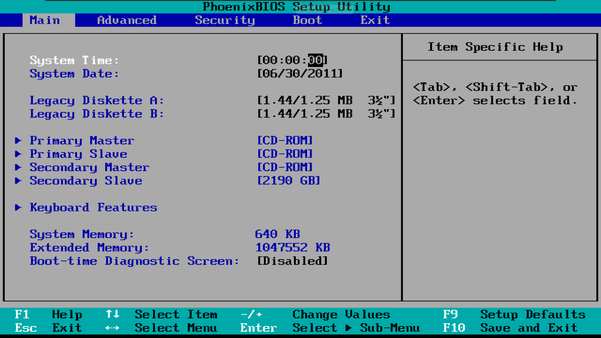Step 2[8]:
Boot up the computer and make a new folder on the C drive (it doesn't have to be labeled different from default unless you want to)
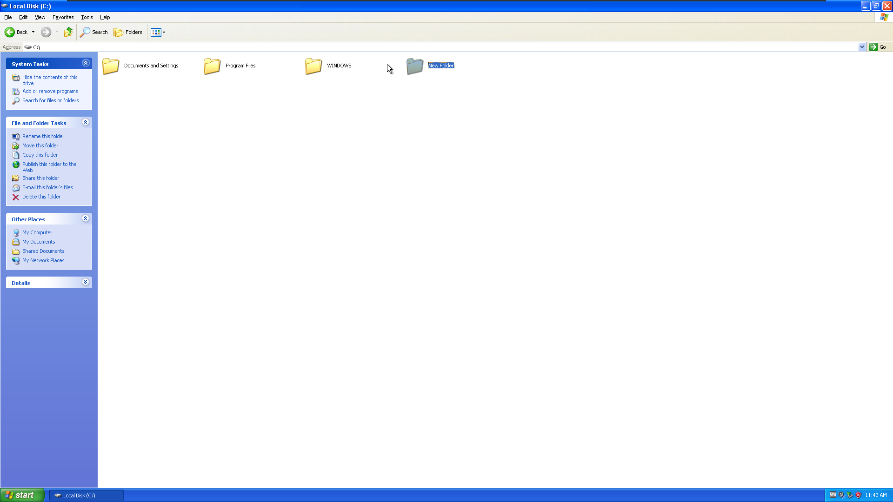Step 3[8]:
Create A "sources" folder inside of the New Folder
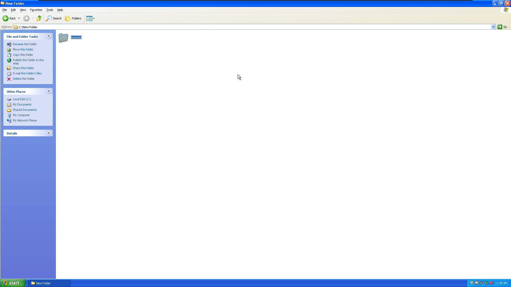Step 4[8]:
Copy install.wim from the 7963 iso inside sources to the sources folder inside New Folder on the Hard Drive
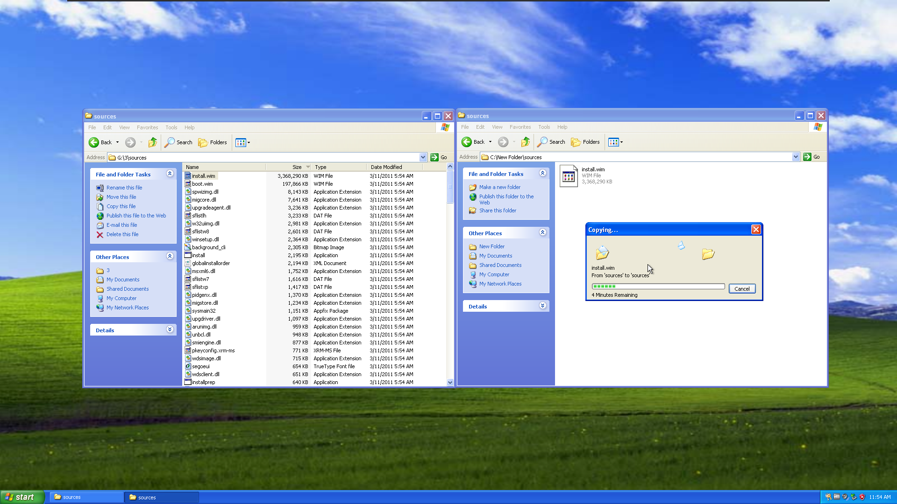Step 5 (optional)[8]:
Copy ShowHideControls.exe to the sources folder inside New Folder on the Hard Drive
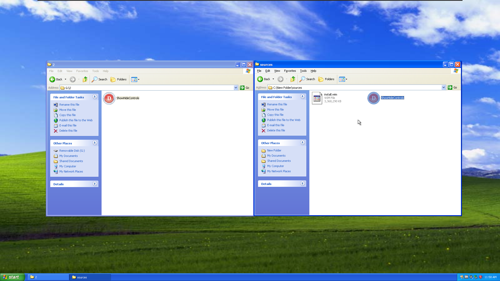Step 6[8]:
Copy "boot, efi, langpacks, support, upgrade, autorun.inf, bootmgr, bootmgr.efi, setup.exe" (NOT "sources") from 7955 to the New Folder on the Hard Drive
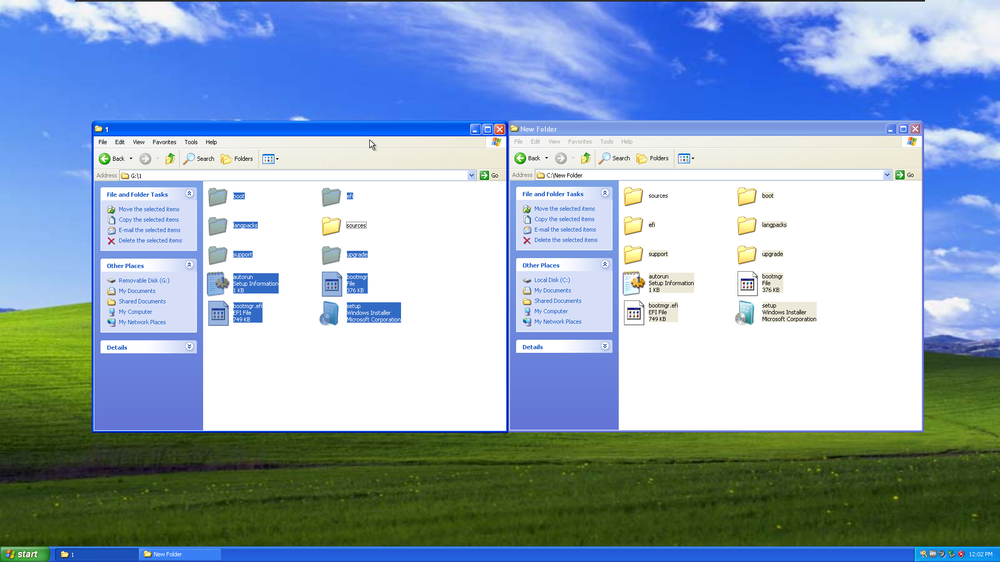Step 7[8]:
Copy Every File And Folder inside sources (EXCLUDING "install.wim") from 7955 to the sources folder inside New Folder on the Hard Drive
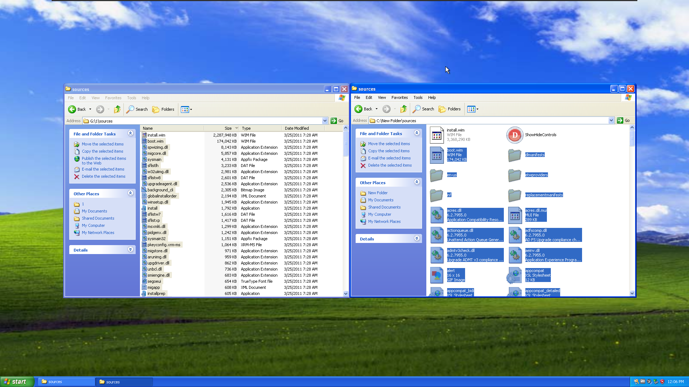Step 8[8]:
Open "product.ini, ShowHideControls.exe, installprep.exe" from the sources folder inside New Folder on the Hard Drive
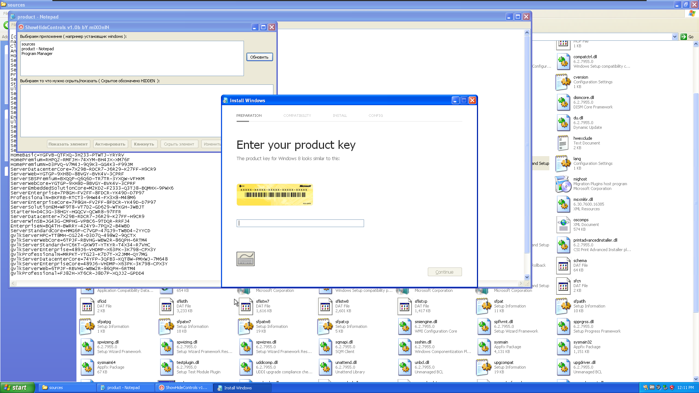Step 9[8]:
Copy The Ultimate Product Key into the Windows 8 Type Setup Screen, Click Continue and Accept the Agreement.
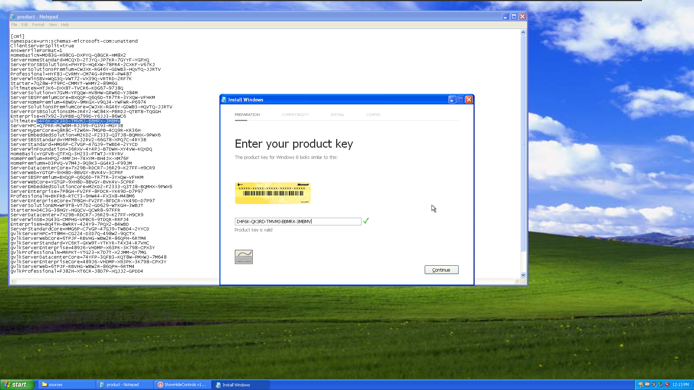Step 10[8]:
Go the the ShowHideControls Window, click the Refresh Button (its actually in russian and i couldn't find or make an english version)
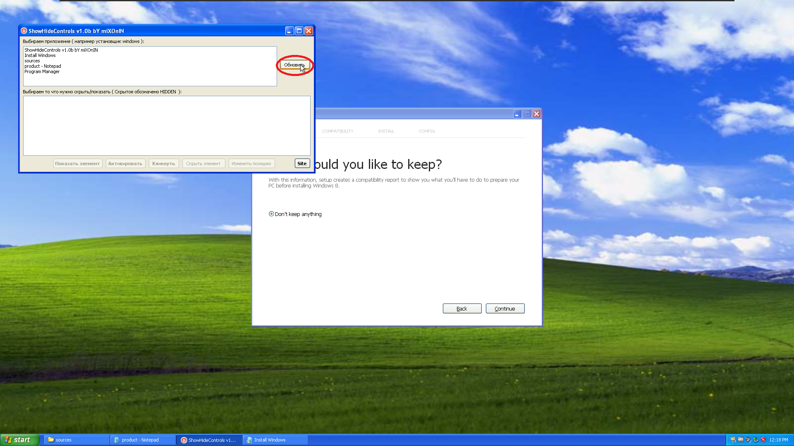Step 11[8]:
Click the show (first) button on ShowHideControls, Mouse over the Don't keep anything button until you see "Keep user accounts, personal files, and programs" and click, then Click Continue on the Windows 8 Type Setup Screen, and then click Install, and wait for it to upgrade, until its done.
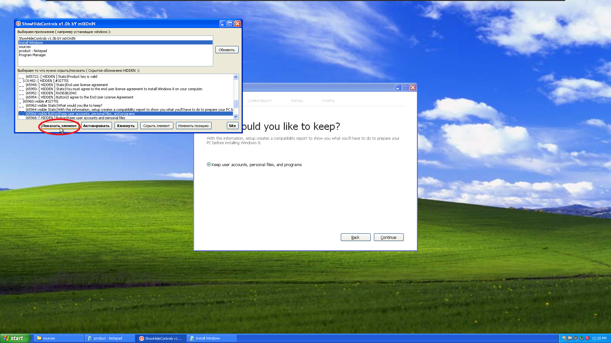Step 12:
Done. Step 12 is not really a step but you did it!
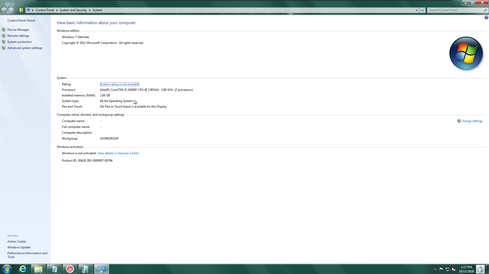Downgrade to 32-bit method[7]:
Step 1 (maybe optional):
Enter your computers BIOS, and set the date to 06/30/2011 (BIOS key will very depending on computer, vmware workstation uses F2, the time can stay the same but I would set it to 00:00:00) [6]
Step 2:
Go to the 7955 iso and open "product.ini & installprep.exe" (you don't have to modify the iso this time). Also open ShowHideControls.exe and enter the product key in Windows 8 Type Setup Screen.
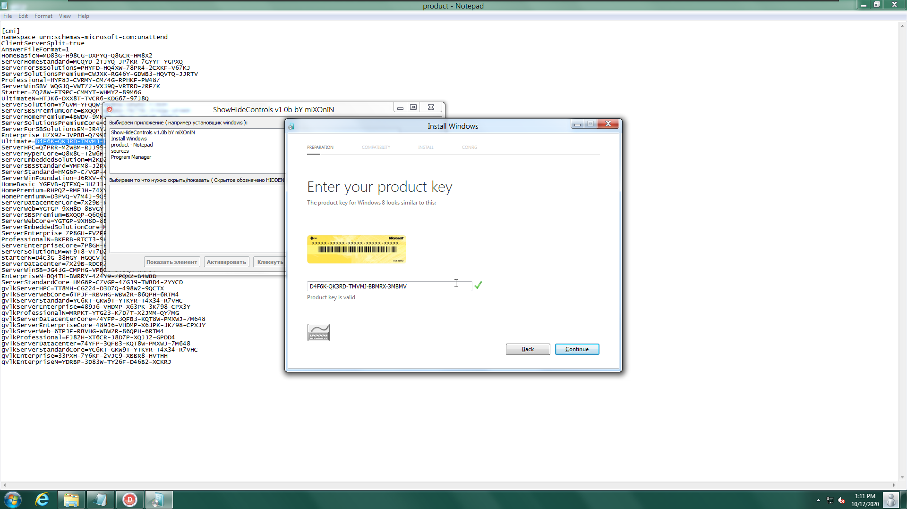Step 3:
Accept The license agreement and go back to the ShowHideControls Window, click the Refresh Button, then Click the show (first) button on ShowHideControls, Mouse over the Don't keep anything button until you see "Keep user accounts, personal files, and programs" and click, then Click Continue on the Windows 8 Type Setup Screen, and then click Install, and wait for it to downgrade, until its done.

Step 4:
Done. Step 4 is not really a step but you did it!
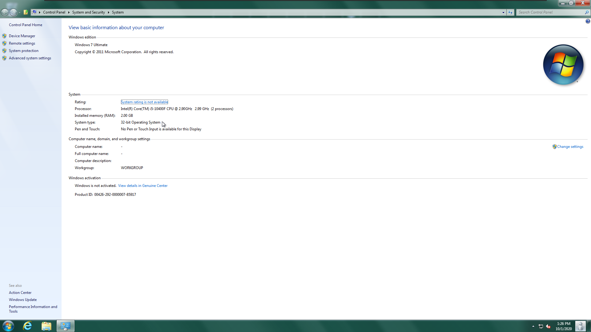{1} Windows 8.0 IS the last known working version to downgrade because of (see [2]).
{2} Windows 8.1 RTM or later downgrading to Windows 8.0 RTM or earlier is known to cause the following issue (see photo)
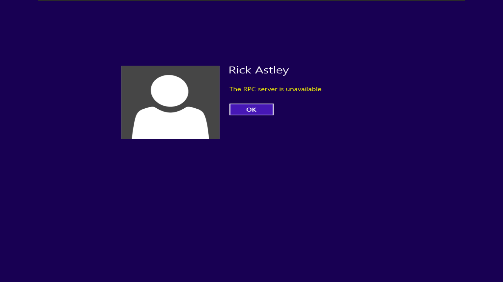{3} Windows 10 build 9841 (TP) or later does not let you use the ShowHideControls trick for whatever reason (see video) It it known not occur on build 9870 because its just a windows 8.1 setup named "installprep.exe" instead of "setupprep.exe"!
{4} You don't have to use these 2 specific builds in the downloads section, these just only work with Windows XP, but if you on something like Windows 7, You can probably use Windows 8 Consumer or Dev preview as these work just find at least for Windows 7/8.
{5} The wallpaper from downgrading from Windows 8 Consumer preview to Windows 8 Dev preview didn't change and its only noticed in XP, its probably because Windows XP didn't come with an "AppData" folder while Windows vista and Up did, and it doesn't redirect, while "Documents and Settings" was changed to "Users", it actually has a "symbolic link".
{6} They all go together and are just repeated.
{7} If you are just going from 32-bit to 32-bit or 64-bit to 64-bit, the steps are pretty much the same.
{8} These photos are Windows XP SP3 (which is 32-bit only)
It is also worth mentioning that you CANNOT upgrade windows 8.1 (10) 32-bit to 64-bit / 64-bit to 32-bit without downgrading first as it just goes to the "choose keyboard layout" instead of the "preparing your pc" screen. While you might be able to downgrade a couple of Windows 10 TP builds to 8.1, it would be useless anyways.
Also, you should NOT put a 1703 (EXAMPLE) install.wim file into a 1709 (EXAMPLE) iso, as it will 1. rollback the install. 2. Get stuck somewhere at the end and you might need to reset.
Whats Next:
Windows XP SP2 (INCLUDING X64-64BIT) and earlier and Windows 8.1 and later support (INCLUDING WIN10).
Windows Server 2003-2022 support. (Windows Server 2003 32to64 is confirmed to work, No 64to32 at this time, still need to write a guide)